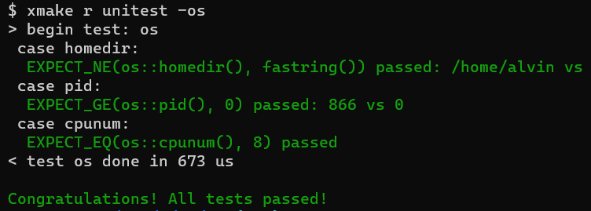
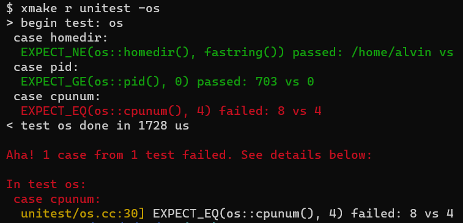

#头文件
#include "co/unitest.h"
#API
公开函数只有一个，在 co 命名空间：
int co::run_unitests(); // 返回失败的 case 数量
- 运行代码中定义的单元测试，返回失败的测试用例数；
main一般是固定写法：
#include "co/unitest.h"
int main(int argc, char** argv) {
flag::parse(argc, argv);
co::run_unitests();
return 0;
}
说明：
- 必须调用
flag::parse，否则测试单元对应的 flag 无法生效。 - 失败的测试用例会在最后统一汇总。
#定义测试单元
DEF_test(name) {
// 测试代码
}
说明：
- 定义一个测试单元，实际相当于一个函数；
name必须是合法的 flag 名 / 变量名；- 程序中可以有多个
DEF_test，只要name不重复。
#定义测试用例
DEF_case(name) {
// 用例代码
}
说明：
- 定义测试用例，相当于 DEF_test 所定义函数中的代码块；
name只要求能转成字符串，不要求是合法变量名，可重复。DEF_test定义的函数中可以不包含任何 DEF_case，这时会创建一个默认的测试用例。
#EXPECT 宏
EXPECT(x)
EXPECT_EQ(x, y)
EXPECT_NE(x, y)
EXPECT_GE(x, y)
EXPECT_LE(x, y)
EXPECT_GT(x, y)
EXPECT_LT(x, y)
说明：
- 失败时记录信息，并继续执行后续代码。
- 失败信息在最后统一汇总。
EXPECT_XX宏中的参数需要支持相应的比较运算符，且可打印，即支持：operator<<(co::string&, const T&);
#运行逻辑
- 每个
DEF_test内部定义一个 bool flag，默认false。 - 如果所有测试单元的 flag 都是默认值
false，则默认运行所有测试单元。 - 如果有任意一个 flag 为
true，则只运行 flag 为true的测试单元。 - 测试单元保存在 vector 中，按注册顺序执行。
命令行示例：
./xx # 运行所有测试单元
./xx -os # 只运行 DEF_test(os)
./xx -os -log # 只运行 os 和 log 两个单元
#示例
#include "co/unitest.h"
DEF_test(math) {
DEF_case(add) {
EXPECT_EQ(1 + 1, 2);
EXPECT_NE(1 + 1, 3);
EXPECT_GT(2, 1);
EXPECT_LT(1, 2);
EXPECT_GE(2, 2);
EXPECT_LE(2, 2);
EXPECT(1 + 1 == 2);
}
DEF_case(mul) {
EXPECT_EQ(2 * 3, 6);
EXPECT_NE(2 * 3, 5);
}
}
DEF_test(string) {
co::string s;
// 不在 DEF_case 中，默认测试用例
EXPECT(s.empty());
DEF_case(empty) {
EXPECT(s.empty());
}
DEF_case(size) {
s = "hello";
EXPECT_EQ(s.size(), 5);
}
}
int main(int argc, char** argv) {
flag::parse(argc, argv);
co::run_unitests();
return 0;
}
运行：
./xx # 运行 math 和 string 两个单元
./xx -math # 只运行 math
./xx -string # 只运行 string
#构建及运行测试程序
unitest 目录下是 coost 内部的单元测试代码，在 coost 根目录执行下述命令构建及运行：
# 构建
xmake b unitest
# 默认运行所有单元测试代码
xmake r unitest
# 仅运行指定的测试单元
xmake r unitest -os -json
测试结果示例：
- 测试全部通过

- 测试用例未通过
